La tortuga que dibuja
En 1967 Wally Feurzeig y Seymour Papert crearon Logo, un lenguaje de programación con fines educativos. Ese lenguaje incluía los "gráficos de tortuga". La "tortuga" de Logo es un cursor al que se le pueden dar órdenes de movimiento (avance, retroceso o giro) y que puede ir dejando un rastro sobre la pantalla. Moviendo adecuadamente la tortuga se puede conseguir dibujar todo tipo de figuras.
Python incluye un módulo llamado turtle que permite crear éste tipo de gráficos tortuga.
Para utilizar el módulo turtle sólo hace falta importarlo:
- Si se va a escribir código no orientado a objetos:
from turtle import *
- Si se va a escribir código orientado a objetos (que es la que se usará a partir de ahora):
import turtle
La ventana de dibujo: setup() y title()
El módulo turtle dibuja en una ventana propia.
El método/función setup(ancho, alto, posicionX, posicionY) permite definir el tamaño y la posición inicial de la ventana. Los cuatro argumentos de la función son (en píxeles):
- ancho: ancho de la ventana.
- alto: alto de la ventana.
- posicionX: posición horizontal de la ventana. Los valores positivos se miden desde el borde izquierdo de la pantalla, los negativos desde el borde derecho de la pantalla.
- posicionY: posición vertical de la ventana. Los valores positivos se miden desde el borde superior de la pantalla, los negativos desde el borde inferior de la pantalla.

El primer programa con tortugas
Se van a trazar un par de líneas en la terminal de Python para crear una nueva tortuga y empezar a dibujar un rectángulo. (La variable que refiere a la primera tortuga se llamará raphael).
FICHERO: tortuga01.py
import turtle
# Set the window size to 800x600 pixels at (0, 0)
turtle.setup(800, 600, 0, 0)
# Set the Screen object as wn
wn = turtle.Screen()
# Creates the turtle
leonardo = turtle.Turtle()
leonardo.forward(300)
leonardo.left(90)
leonardo.forward(200)
wn.exitonclick()
Tras la segunda instrucción, se abrirá una nueva ventana. El tercer comando coloca un cursor –llamando cariñosamente a una turtle del módulo– a la que se le ha puesto el nombre de raphael. Las siguientes tres líneas mueven a raphael hacia adelante, gira hacia la izquierda, y lo mueve hacia adelante una vez más, completando dos lados de un rectángulo.
Después de introducir estos comandos, se verá una ventana que se parecerá a esto:
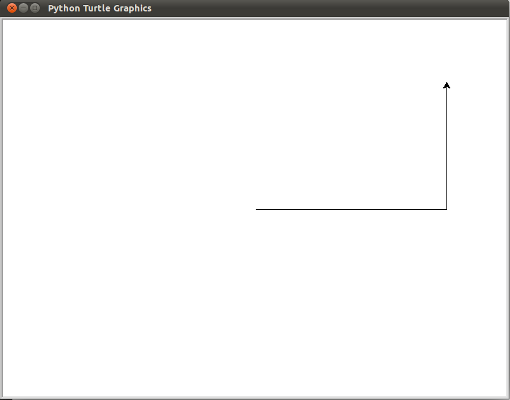
Aquí hay un par de cosas que se necesita entender acerca de este programa.
- La primera línea le dice a Python que cargue un módulo llamado
turtle. Dicho módulo trae dos nuevos tipos que se pueden utilizar: la claseTurtle, y la claseScreen. La notación de puntosturtle.Turtlesignifica “La claseTurtledefinida en el móduloturtle” (Python distingue entre mayúsculas y minúsculas, así que el nombre del módulo, con unatminúscula, es diferente al que la tiene mayúscula). - A continuación, se crea y abre lo que se llama una
Screen, que se asigna a la variablewn. CadaScreencontiene un lienzo (canvas), que es el área dentro de ella en la que se puede dibujar. En la siguiente línea se crea una tortuga. La variableleonardose usa para referirse a ella. Estas tres primeras líneas son la preparación para ahora hacer algunas cosas útiles. - A continuación se instruye al objeto
leonardopara que se mueva, y que gire. Se hace mediante la invocación a los métodos deleonardo—instrucciones a las que todas las tortugas saben cómo responder. - La última línea también desempeña un papel: la variable
wnse refiere a la ventana activa. Cuando se invoca el métodoexitonclick, se detiene la ejecución del programa y se espera a que el usuario haga click con el ratón en algún lugar de la ventana. Cuando este evento click se produce, la respuesta es cerrar la ventana de la tortuga y la salida (la ejecución de la parada) del programa de Python.
Un objeto puede tener varios métodos —las cosas que puede hacer— y también puede tener atributos (también llamados propiedades). Por ejemplo, cada tortuga (Turtle) tiene un atributo color. El modo de invocarlo es leonardo.color("red") que hará a leonardo rojo, y el dibujo será de color rojo también. El color de la tortuga, la anchura de la pluma, la posición de la tortuga dentro de la ventana, la apariencia, etc. son partes de su estado actual. Del mismo modo, el objeto Screen tiene un color de fondo y un texto en la barra de título, y un tamaño y posición en la pantalla. Todos ellos forman parte del estado del objeto screen. Hay un buen número de métodos que nos permiten modificar tortugas y screens. Vamos a mostrar un par:
FICHERO: tortuga02.py
import turtle
# set the window size to 800 by 600 pixels at (0, 0)
turtle.setup(800, 600, 0, 0)
# set wn as a window object
wn = turtle.Screen()
# set the background color of the window
wn.bgcolor("lightgreen")
# set the title of the window
wn.title("¡Hola, Raphael!")
raphael = turtle.Turtle()
raphael.color("blue") # make raphael blue
raphael.pensize(3) # set the width of the pen
raphael.forward(300)
raphael.left(120)
raphael.forward(300)
wn.exitonclick()
La ejecución de este programa creará una ventana gráfica que se verá así:
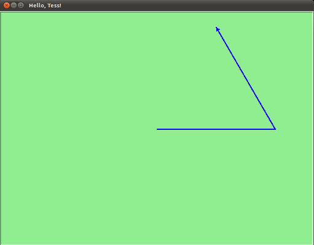
Cuando se ejecuta este programa aparece esta nueva ventana y permanecerá en pantalla hasta que se haga clic en ella.
Nota:
Se puede encontrar una lista de nombres de colores permitidos en http://www.tcl.tk/man/tcl8.4/TkCmd/colors.htm. Incluye algunos bastante inusuales, como
peach puff(bocanada de melocotón) yHotPink(rosa caliente)
Una manada de tortugas
Al igual que podemos tener muchos enteros diferentes en un programa, podemos tener muchas tortugas. Cada una de ellas es una instancia. Cada instancia tiene sus propios atributos y métodos -por lo que raphael puede dibujar con un lápiz negro delgado y estar en alguna posición, mientras que donatello podría ir en su propia dirección con un bolígrafo de color rosa grueso (fat pink). Aquí está lo que sucede cuando raphael termina su rectángulo, y donatello completa su triángulo:
FICHERO: tortuga03.py
import turtle
# setup the window and its attributes
turtle.setup(800, 600, 0, 0)
wn = turtle.Screen()
wn.bgcolor("lightgreen")
wn.title("donatello & raphael")
# instantiate (create) donatello and set his attributes
donatello = turtle.Turtle()
donatello.color("hotpink")
donatello.pensize(5)
# instantiate raphael
raphael = turtle.Turtle()
# draw an equilateral triangle with donatello
donatello.forward(320)
donatello.left(120)
donatello.forward(320)
donatello.left(120)
donatello.forward(320)
donatello.left(120)
# turn donatello around and move her away from the origin
donatello.right(180)
donatello.forward(320)
# make raphael draw a square
raphael.forward(200)
raphael.left(90)
raphael.forward(200)
raphael.left(90)
raphael.forward(200)
raphael.left(90)
raphael.forward(200)
wn.exitonclick()
que genera esto cuando se ejecuta:
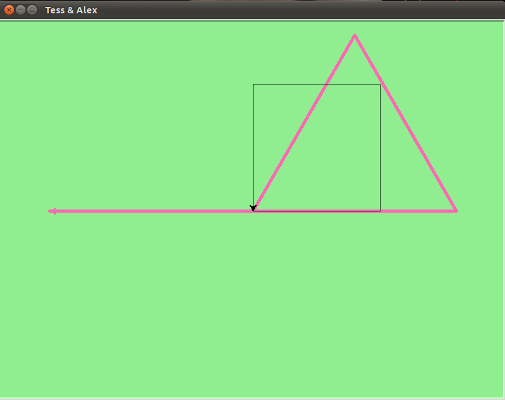
Algunos trucos y métodos de tortugas
showturtle(), hideturtle()
El método showturtle() muestra el cursor (la tortuga) mientras que hideturtle() la oculta.
penup() y pendown()
Los métodos pendown() y penup() son equivalentes a bajar y levantar el lápiz del papel. Una vez levantado el lápiz del papel, al desplazar la tortuga ya no se dibujan segmentos. Al volver a bajar el lápiz y desplazar la tortuga, vuelven a dibujarse los segmentos.
goto(), setx() y sety()
Los píxeles del área de dibujo se pueden localizar mediante un sistema de coordenadas XY centrado en el centro del área de dibujo. Al crear la ventana, el cursor se sitúa en el centro de la ventana, de coordenadas (0, 0).
La función goto(x, y) permite desplazar el cursor a una posición determinada del área de dibujo y, si la tortuga tiene su lápiz abajo (pendown) traza el recorrido desde la posición actual a las coordenadas indicadas por x e y del método goto.
setx(x) y sety(y) realizan la misma función que goto pero tocando solo una de las dos coordenadas de destino.
pensize(), pencolor() y colormode()
El método pensize(grosor) permite modificar el grosor del trazo.
El método pencolor(rojo, azul, verde) permite modificar el color del trazo. El color se da como combinación de rojo, azul y verde. Los valores de color se pueden dar como valores enteros entre 0 y 255 o como valores decimales entre 0 y 1. Para elegir entre un modo u otro se utiliza la función colormode(1) o colormode(255). También se pueden utilizar nombres de colores, que incluyen entre otros los nombres de colores SVG, en cuyo caso no hace falta utilizar el método colormode().
dot()
La función dot(grosor, color) permite dibujar un punto del grosor y color indicado en el punto en el que se encuentre la tortuga. El grosor se indica en píxeles y el color se expresa como en la función pencolor() vista en el apartado anterior (entre paréntesis, como tupla, o sin paréntesis). Los puntos se dibujan indistintamente de la posición del lápiz (penup, pendown).
Ángulos y distancias negativas
Los métodos de la tortuga pueden utilizar ángulos y distancias negativas. Así donatello.forward(-100) moverá a donatello hacia atrás y donatello.left(-30) lo gira a la derecha.
Además, dado que hay 360 grados en un círculo, al girar 30 a la izquierda se estará en la misma situación que si se gira 330 a la derecha! (La animación en la pantalla será diferente).También hay un método backward (si se es muy nerd, uno puede disfrutar de mover a raphael hacia adelante mediante raphael.backward(-100)).
Formas de tortuga: shape()
Cada tortuga puede tener su propia forma. Las que están disponibles son arrow (flecha), blank (espacio en blanco), circle (círculo), classic (clásico), square (cuadrado), triangle (triángulo), turtle (tortuga).
raphael.shape("turtle")
Velocidad: speed()
Se puede acelerar o ralentizar la velocidad de la animación de la tortuga. El ajuste de velocidad varía entre 1 (lento) a 10 (más rápido). Sin embargo, si se establece la velocidad a 0 se desactivará la animación y se irá lo más rápido posible.
raphael.speed(10)
Sello: stamp()
Una tortuga puede crear un “sello” (stamp) de su huella en el lienzo que seguirá así después de que la tortuga se haya movido a otra parte. Se sella, aun cuando la pluma esté arriba.
El siguiente ejemplo muestra algunas de estas nuevas características:
FICHERO: tortuga04.py
import turtle
turtle.setup(800, 600, 0, 0)
wn = turtle.Screen()
wn.bgcolor("lightgreen")
wn.title("Donatello's Spiral")
donatello = turtle.Turtle()
donatello.shape("turtle")
donatello.color("blue")
donatello.penup() # this is new
size = 20
for i in range(30):
donatello.stamp() # leave an impression on the canvas
size = size + 3 # increase the size on every iteration
donatello.forward(size) # move donatello along
donatello.right(24) # and turn her
turtle.done()
que genera esto cuando se ejecuta:
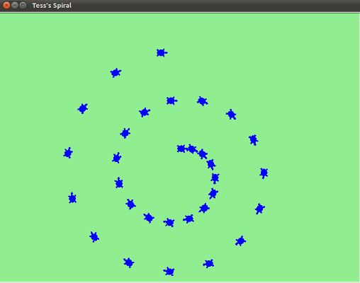
Relleno de figuras
El método begin_fill() indica a Python que las figuras que se dibujen a partir de ese momento se deben rellenar. El método end_fill() indica a Python que las figuras deben dejar de rellenarse.
El método fillcollor(color) permite establecer el color de relleno, de la misma manera que la función pencolor().
Si no se establece un color de relleno distinto, el color de relleno predeterminado es el negro.
Para rellenar una figura, se debe llamar a la función begin_fill(), dibujar la figura y llamar a la función end_fill().
FICHERO: tortuga05.py
import turtle
wn = turtle.Screen()
wn.setup(800, 600, 0, 0)
wn.title("Relleno de figuras")
leonardo = turtle.Turtle()
leonardo.hideturtle()
leonardo.pensize(5)
leonardo.fillcolor("red")
leonardo.begin_fill()
leonardo.goto(100, 0)
leonardo.goto(100, 50)
leonardo.goto(0, 50)
leonardo.goto(0, 0)
leonardo.end_fill()
wn.exitonclick()

Si no se establece un color de relleno distinto, el color de relleno predeterminado es el negro.
Aunque realmente no es necesario dibujar la figura completa ya que Python rellena la figura aunque no se cierre (es como si Python uniera el último punto de la figura con el primero).
Si las líneas de la figura se cruzan, Python rellena cada una de las partes cerradas.
FICHERO: turtle06.py
import turtle
wn = turtle.Screen()
wn.setup(800, 600, 0, 0)
wn.title("Relleno de figuras")
leonardo = turtle.Turtle()
leonardo.speed(1)
leonardo.pensize(5)
leonardo.fillcolor("red")
leonardo.begin_fill()
leonardo.goto(100, 100)
leonardo.goto(200, -100)
leonardo.goto(300, 0)
leonardo.goto(0, 0)
leonardo.end_fill()
leonardo.hideturtle()
wn.exitonclick()

Dibujar círculos: circle()
Vista general de los métodos para Turtle y Screen
Turtle
Movimiento de Turtle
Mover y dibujar
backward() | bk() | back()
goto() | setpos() | setposition()
Mostrar el estado de Turtle
Medidas
Control del lápiz
Estado del lápiz
Control del color
Relleno
Más controles de dibujo
Estado de Turtle
Visibilidad
Apariencia
Uso de eventos
Métodos especiales de Turtle
Métodos de TurtleScreen/Screen
Control de la ventana
Control de la animación
Uso de eventos de pantalla
Configuraciones y métodos especiales
Métodos de entrada
Métodos específicos de Screen
Ejercicios
1.- Crea mediante funciones las siguientes formas geométricas:
- un cuadrado de tamaño
side
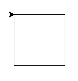
SOLUCIÓN: eje0101.py
- una estrella de cinco puntas de lado
side
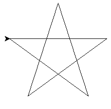
SOLUCIÓN: eje0102.py
- un polígono de
sideslados de longitudside_lenght
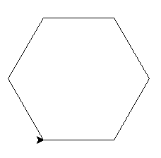
SOLUCIÓN: eje0103.py
- una espiral cuadrada azul en fondo verde de lado
sizey decrementodec
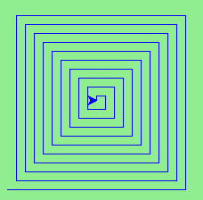
SOLUCIÓN: eje0104.py
2.- Crear un programa que dibuje líneas de ancho creciente alrededor de un punto central:
- creando un patrón atractivo.
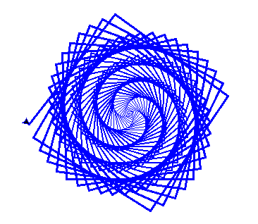
SOLUCIÓN: eje0201.py
- partiendo del ejercicio anterior pero creando un patrón hexagonal
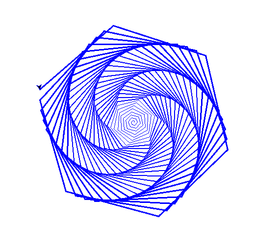
SOLUCIÓN: eje0202.py
- terminar dando color para construir el "Arcoiris de Benceno"
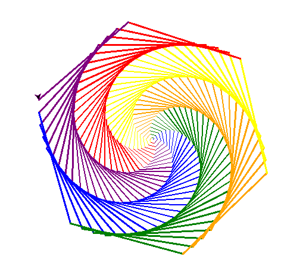
SOLUCIÓN: eje0203.py